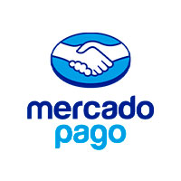

Sobre Nosotros
El Campito Refugio es una ONG, sin fines de lucro. Estamos inscriptos, como Asociación Civil, REFUGIO EL CAMPITO personeria juridica n° 6971, Ruta16 Parcela 501 E Monte Grande, Partido de Esteban Echeverría, zona sur del Gran Buenos Aires, en Argentina.
El refugio tiene una población que ronda los 750 perros. Por ser un refugio no eutanásico, consideramos que cada animal tiene valor y ofrecemos cuidado de por vida.
El objetivo principal de la organización es la concientización de la sociedad. Las ideas que se difunden a través del accionar diario del refugio son las del respeto irrestricto por la vida y la de que el bienestar de los animales se puede lograr si la sociedad se involucra y los sentimientos de piedad se traducen en acciones concretas. Los pilares de esta concientización son: el cuidado adecuado y el no abandono de las mascotas, la esterilización como único medio de control poblacional, la adopción en lugar de la compra de animales, el rechazo a toda forma de sacrificio o eutanasia. La concientización a la cual apunta El Campito Refugio va más allá del respeto y cuidado hacia a los animales. El objetivo es lograr una sociedad no abandónica y respetuosa, tanto de sus animales, como de sus abuelos como de las personas con capacidades diferentes.
¡Visítanos!
RP 16, Monte Grande, Argentina | 12:30 a 16:30 Hs
Revisa las redes para ver que día se realizarán.
Se puede ir directo, sin inscripción previa. SI LLUEVE, SE SUSPENDE LA VISITA. Antes de salir te recomendamos que chequees la información actualizada en nuestras Redes Sociales. Recordá traer correas, lapiceras para llenar los cuestionarios de salud, repelente, protector solar (para el verano), gorrito, abrigo (para el invierno) y lo que quieras para pasar el día (bebida, comida, reposeras, etc.) También podés traer arroz con pollito para los camperitos (cocidos), sin sal y sin ningún condimiento. ¡¡Dale!! ¡¡Vení!! Convertite en voluntario por un día, doná unas horas y llenate el alma ayudándolos y dándoles amor a nuestros camperitos.
Nuestros Camperitos
Aca encontrarás las mejores historias de nuestros camperitos.
Algunos han tenido una vida muy dura, pero por suerte, se han cruzado en su camino personas de gran corazón que han pedido por ellos, nosotros que los recibimos devolviéndoles la dignidad, y las madrinas y padrinos que los acompañan durante el proceso de recuperación cubriendo sus necesidades. Algunos fueron felizmente adoptados, otros ya son estrellitas y otros todavía esperan una familia.
Voluntariado
¡En El Campito Refigio hay mucho por hacer!
Para que puedas integrarte, hemos creado un espacio formativo permanente que nos ayude a potenciar la participación real y efectiva de aquellos que deseen dejar de ser visitantes para convertirse en voluntarios de nuestra ONG.
Todos los años El Campito abre la inscripción para reclutar voluntarios que posean un real compromiso para trabajar en las distintas áreas de nuestro refugio. Actualmente cerca de 150 voluntarios trabajan en nuestro Refugio proveyendo compañía, estímulo y ejercicio a nuestros animales, brindando su trabajo en caniles, enfermería, página web, colectas, reeducación y sociabilización de animales con problemas de conducta, evaluando adoptantes, efectuando traslados y rescates, trabajando en jornadas y asistiendo a colegios para concientizar, dando la bienvenida y asistiendo a nuestros visitantes. VOS PODES SER UNO DE ELLOS.
Estamos desarrollando itinerarios educativos para que los voluntarios puedan elegir las actividades en las que desean participar en nuestro refugio. Al finalizar este proceso, acordaremos con cada voluntario su compromiso, responsabilidades y tareas. Todos los postulantes deberán asistir a cursos de formación para garantizar un estándar en el cuidado de los animales y aprender técnicas de seguridad. La selección de voluntarios será selectiva y basada en las necesidades específicas de las tareas a realizar. Se requiere un compromiso mínimo de 6 meses, pero se espera que los voluntarios permanezcan por más tiempo. Pedimos a los postulantes que consideren cuidadosamente su disponibilidad antes de enviar su solicitud para evitar decepciones y garantizar un compromiso duradero.
Donaciones
El Campito no recibe subsidios, aportes de empresas, o alimento balanceado de ninguna compañía, no tiene cuotas ni socios. Se puede ser padrino / madrina del refugio, o de un perrito que desees proteger en particular, a voluntad: no hay montos fijos y la frecuencia de la ayuda también es voluntaria. .
DONÁ VÍA CUENTA BANCARIA
Banco Santander Rio
Refugio El Campito
Cta Cte n° 0123787 - Sucursal 180
CBU 0720180220000001237872
CUIT 30-71212593-0
DONÁ POR DÉBITO AUTOMÁTICO CON TARJETA VISA Y VISA ELECTRÓN
Si querés colaborar mensualmente con el refugio y con tus ahijados, ahora podés hacerlo utilizando tu tarjeta de crédito. Elegí el monto que quieras donar, y se debitará automáticamente de tu cuenta todos los meses
Hacé click aquí para completar el formulario.

DONÁ POR MERCADO PAGO
Elige el monto que quieras donar, toda ayuda es valiosa
Hacé click aquí para completar el formulario.DONÁ VÍA PAYPAL
Elige el monto que quieras donar, toda ayuda es valiosa, si deseas puedes elegir realizar un donativo mensual
Hacé click aquí para completar el formulario.